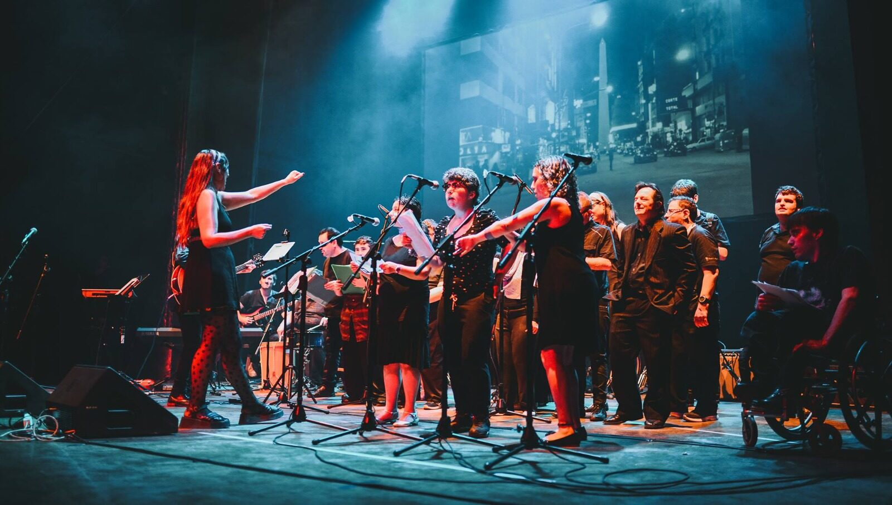
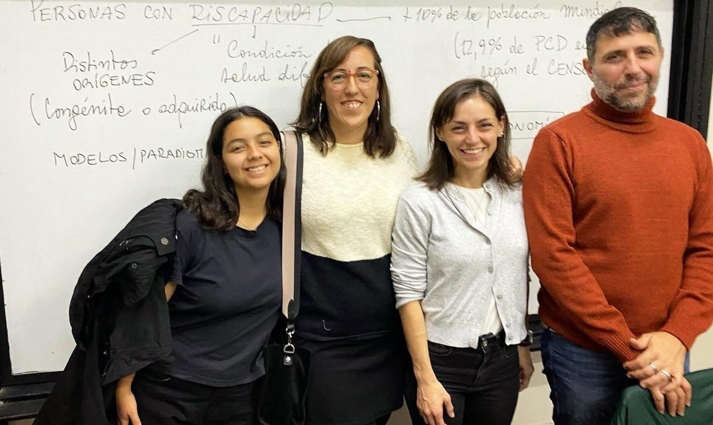

1. Susurro y altavoz
Participación de nuestro taller de literatura en Canal Encuentro.

Donde los caminos se encuentran
Históricamente las propuestas destinadas a las personas con discapacidad intelectual en nuestro país y en el mundo en general, tuvieron como característica que se realizaban puertas adentro. Circuitos endogámicos por los que transitaban personas invisibles para el mundo. Actividades en territorios “seguros” con poco o nulo intercambio con la comunidad.
Desde el inicio, el espíritu de nuestra institución buscó no acumular productos en las estanterías, o en otras palabras, incentivar a los concurrentes a conquistar espacios de encuentro por fuera de los muros de nuestra sede.
Por ese motivo, la experiencia, natural e intencionadamente nos llevó hacia el afuera. En los años 90, el taller de música, por ejemplo, presentaba sus canciones en jardines maternales; el de cocina, por su parte, destinaba su producción de galletitas a merenderos del barrio, o tortas a una asociación que festejaba cumpleaños de niños que vivían en hogares.
Con el tiempo realizamos muchas y diversas experiencias. Saliendo a la calle o abriendo las puertas de nuestra sede. Se trataba y sigue tratando de abrir “caminos” para ser parte del barrio, para conocerse, intercambiar, y construir redes naturales de mutuo apoyo con la comunidad.
Participación de nuestro taller de literatura en Canal Encuentro.
Participación en la muestra de la Universidad de Artes de Tokio y UNTREF.

Encuentro musical por la inclusión con la participación de nuestro coro.
Experiencia de intercambio en 2008.

Intercambios históricos con alumnos del colegio.
Una película de animación realizada por nuestros concurrentes.
Tu apoyo nos permite seguir abriendo puertas y derribando prejuicios en la comunidad.
DONÁ AHORA